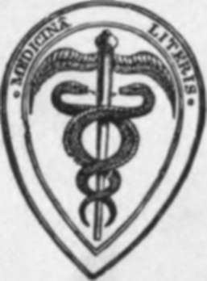

The Anatomy Of The Human Skeleton | by J. Ernest Frazer
Knowledge of the skeleton as an integral part of the study of human anatomy, and, in the literature bearing upon the subject, we find masterly accounts of the constituent bones which rank as classics in the education of the student. In this book I have ventured to wander in some degree from the well-trodden road and to lead the reader by other ways to the comprehension of his subject.
| Title | The Anatomy Of The Human Skeleton |
| Author | J. Ernest Frazer |
| Publisher | J. & A. Churchill |
| Year | 1920 |
| Copyright | 1920, J. & A. Churchill |
| Amazon | The anatomy of the human skeleton |
By J. Ernest Frazer, F.R.C.S.Eng., Professor Of Anatomy In The University Of London And Lecturer In The Medical School Op St. Mary's Hospital ; Examiner In Anatomy For The University Of London; Examiner In Anatomy For The Primary Fellowship Of The Royal College Of Surgeons Of England; Formerly Examiner In Anatomy For The Conjoint Board Of The Royal Colleges Of Physicians And Surgeons
J. & A. Churchill
 Preface
Preface- It is not necessary to lay emphasis on the importance of a knowledge of the skeleton as an integral part of the study of human anatomy, and, in the literature bearing upon the subject, we find masterl...
- Preface To Second Edition
- The kindness extended by reviewers to this book on the occasion of its first appearance, and the steady demand for it since the War, give me reason to hope that this edition will still find a sphere o...
- Chapter I. Preliminary
- The SKELETON constitutes the framework on which the soft tissues of the body are supported, enabling them to retain their definite position in the body and, in the case of the limbs, affording a stron...
- Preliminary. Part 2
- Many and various names are given to the different markings and irregularities seen on bones : thus a hole in a bone may be termed a foramen, canal, or, in certain cases, a meatus, hiatus, or (aquae) d...
- Preliminary. Part 3
- A knowledge of the growing ends is necessary for the surgeon who may have to deal with injuries affecting them, with subsequent premature junction with the shaft and, as a consequence, shortening ...
- Preliminary. Part 4
- Pressure and saving of space are at the bottom of tendon-formation, and thus in the body, where the mass of the packed muscles exceeds that of the skeleton, the muscles narrow to their attachments on ...
- Chapter II. Vertebral Column
- The human spinal column is made up of some thirty-three segments or vertebra : the length of the column of bones is much increased by intervertebral discs of fibro-cartilage placed between the segment...
- Typical Vertebra
- In front a strong body carries and transmits weight, while the neural arch behind this covers in the spinal cord : in conformity with this we find the strong pads of the intervertebral discs placed be...
- Regions Of The Column
- The vertebral column is divided into regions in which the vertebrae show characteristic modifications. The most nearly typical region is that which carries the movable libs, and is called dorsal: the ...
- Regions Of The Column. Continued
- The greater depth of the fronts of the lumbar bodies in Europeans is really confined to the lower two or three members of the series. In lower races the bodies, except the last, are shallower in front...
- Cervical Vertebra
- The drawing of a cervical vertebra in Fig. 9 would represent, with minor modifications, the general appearance of any member of this series from the third to the sixth inclusive ; but the type has bee...
- Cervical Characters (Third To Sixth)
- The characters of a typical cervical vertebra are :-Body small, shallow from above downwards, concave transversely above and sagittally below, so that it overlaps the next body in front, broader trans...
- Seventh Cervical Vertebra
- This differs from those just described mainly in its long, strong, and non-bifid spine, and in the smallness of its arterial foramen. The condition of the spine is associated with the attachment of th...
- Detailed Consideration Of Cervical Vertebrae
- The anterior common ligament covers the bodies centrally, and on each side of this are the prevertebral muscles. Take one of the middle members of the series and observe that the central ligamentous a...
- Detailed Consideration Of Cervical Vertebrae. Part 2
- The first two cervical nerves differ from all other spinal nerves in issuing behind the articular masses. The explanation is that the articular masses concerned are morphologically different from thos...
- Detailed Consideration Of Cervical Vertebrae. Part 3
- The three-sided spinal canal increases in size from the Axis to the fifth and then decreases, so corresponding with the position of the thickest part of the cervical enlargement of the cord. The front...
- Atlas
- The tip of the anterior tubercle points down, and has the anterior common ligament attached to it : on each side of this (Fig. 19) the Longus colli is inserted on a rough area. The anterior occipito-a...
- Dorsal Vertebra
- The distinguishing mark of this series is the presence of costal facets on the bodies. Other general characters, as seen in a middle vertebra in the series, are as follows :- Body somewhat triangul...
- Dorsal Vertebra. Continued
- Indications of the diverging nature of the fibres of the stellate ligaments of the rib-heads can be seen in the markings that lie round the facets, and the attachment of the anterior common ligament t...
- Lumbar Vertebra
- Distinguished by their large size and massive structure, with absence of transverse foramen and costal facets. They present large kidney-shaped bodies, slightly deeper in front than behind : pedicles ...
- Lumbar Vertebra. Part 2
- These origins from the fronts of the transverse processes account for the presence of the lumbar nerves in the substance of the Psoas, for it is apparent that each nerve as it turns down over the fron...
- Lumbar Vertebra. Part 3
- Ossification Of Vertebrab The vertebrae are preformed in cartilage, the cartilaginous structure showing a centrum and two separate halves of a neural arch, with the various processes represented at...
- Sacral Vertebra
- Five (or sometimes six) vertebrae below the lumbar region are fused in the adult into a single bone, the Sacrum, which forms the back wall of the bony pelvis, being situated between the two innominate...
- Sacral Vertebra. Part 2
- Looking at the bone from above, it is easy to see that the lateral mass is built up by the fusion of these costal elements and transverse processes, and the same structure can be traced down through i...
- Sacral Vertebra. Part 3
- It thus comes about that the posterior primary divisions of nerves, coming through the first three foramina, are in the substance of Multifidus spina? and are connected by loops here, on the bone : th...
- Ossification Of Vertebral Column
- The centres from which the bone is formed are those of its constituent vertebrae plus costal and epiphysial centres in the lateral mass, but the number of these last is variously estimated by differen...
- Coccyx
- This small bone is composed of the fused remains of four or more vertebral bodies, of which the first alone, as a rule, carries rudiments of transverse processes and upper articular processes : the la...
- Chapter III. Thorax
- The thoracic skeleton is attached dorsally to the vertebral column. It contains a series of twelve ribs on each side, connected with a central sternum in front by means of costal cartilages. Of eac...
- Ribs And Costal Cartilages
- A bone from the middle of the series will show the general characters and various parts of a rib. Such a specimen (Fig. 37) exhibits at its vertebral end an expanded head (A), joined to the remainder ...
- Costal Cartilages
- These are bars of hyaline cartilage rather more rounded than the ends of the ribs with which they are joined. Each is covered by a thick perichondrium continuous with the periosteum of the rib, and th...
- Costal Cartilages. Part 2
- On their outer side the ribs are covered for the most part by large flat muscles which lie on them. Fig. 39 shows these relations : the pectorals have been in great part removed on the one hand, and o...
- Costal Cartilages. Part 3
- A brief examination shows that the upper and lower members of the series differ decidedly from the majority of ribs : the chief points of distinction are as follows : First Rib Articulates with ...
- Costal Cartilages. Part 4
- E and LC are continuous, owing to continuity of the muscular fibres, and some of the ridges of the levator area can be traced occasionally into EE just in front of the tubercle. This last indicates th...
- Costal Cartilages. Part 5
- The secondary markings made by the outer column of the Erector spinae and the aponeurosis can be seen on all the bones except the first : even on the last rib, although there is no true angle in the f...
- Costal Cartilages. Part 6
- The inner surface of the last rib looks in an upward and inward direction in its whole extent, particularly at its vertebral end : if this is borne in mind the common mistake of placing the bone on th...
- Sternum
- The sternum is a long flat bone, evidently composed of several fused segments, that lies in the front wall of the chest, having the true costal cartilages attached to its sides (Fig. 47). The bone ...
- Sternum. Continued
- Probably these fibrous portions of the pectoral masses account for faint markings that may often be felt on the last segment of the body, frequently suggesting to the touch that there is another divid...
- Chapter IV. Limbs: Upper Limb I. The Limb-Girdles And Skeleton Of The Free Limbs
- The term limb is popularly applied to one of the appendages that are freely movable on the body and distinct from it, but it must not be forgotten that these are only what one may call free ...
- Limbs: Upper Limb I. The Limb-Girdles And Skeleton Of The Free Limbs. Continued
- Looked at in this way, it becomes doubtful whether such a thing as true homology can be said to exist between the upper and lower limbs; the likeness between them is the result of similarity of relati...
- Upper Limb
- The buried pectoral girdle consists of two bones on each side-the Scapula or shoulder blade, on the back and outer side of the upper part of the thorax, supported here by muscles and by the clavicle o...
- Upper Limb. Part 2
- The security of the joint depends on these two connections, so that the remaining capsular fibres are comparatively weak and loose, particularly below and in front: the joint is supported in front by ...
- Upper Limb. Part 3
- The suprascapular artery runs out behind the bone, held to it by the omohyoid fascia, and it gives off here the small nutrient artery which pierces the bone behind and below, running in an outward dir...
- Scapula
- A flat tone, placed on the postero-external aspect of the upper part of the thorax, connected with the sternum by the clavicle, and carrying the humerus. Triangular in shape, therefore with thr...
- Ventral Surface
- Observe that the narrow rim on this surface close to the vertebral border, for the Serratus magnus, widens at the upper and lower angles-especially at the lower angle- and thus the origin of Su...
- Spine And Acromion
- This has a thick rounded bar at its free outer border, which is the only part of the process to be preformed in cartilage (Fig. 58). The remaining thinner portion is apparently ossified directly in me...
- Spine And Acromion. Part 2
- Coracoid Process (Fig. 57). This has already been described as arching forwards and a little outwards from the upper border of the bone over the tendon of Subscapularis : its tip is slightly depres...
- Spine And Acromion. Part 3
- The upper end of the bone is usually over the second rib. The base of the spine can be located through the skin and is opposite the third dorsal spine : from this the spine can be traced upwards and o...
- Humerus
- A long bone forming the skeleton of the upper arm, articulating with the scapula above and with the bones of the forearm below : it has an elongated shaft with expanded upper and lower ends (Fig. 61)....
- Humerus. Part 2
- The want of security evident in such a shallow articulation is a consequence of the necessity for having free movement in all directions, and the two bones cannot be firmly held together by ligaments,...
- Humerus. Part 3
- The compound nature of the epiphysis has led to the introduction of the term morphological neck to indicate the true junction of the head and shaft only : this (Fig. 64) corresponds with the lower hal...
- Humerus. Part 4
- Fig. 67.-The two planes of the Triceps. In the first figure the inner head is seen as the deep plane of the muscle ; observe the musculo-spiral nerve crossing the inner head to reach the bone externa...
- Condyles
- Inner condyle (or epicondyle) is the more prominent, in an inward and backward direction,* though the outer supracondylar ridge is better marked and sharper than the inner. Two surfaces are visible (F...
- Ossification Of Limbs
- The bone is preformed in cartilage. A centre for the shaft appears in the sixth to seventh week, and at birth the ends are cartilaginous, but in about a fifth of the total cases a small centre is pres...
- Ulna And Radius
- These two bones, connected by an interosseous membrane, constitute the skeleton of the forearm. They articulate with the humerus above and carry the hand below. The ulna is the inner bone, and forms t...
- Ulna And Radius. Continued
- The radius is held to the ulna by certain bands of connection, which, while keeping it in constant contact, yet do not in the least impair its power of rotation round that bone : these can be co nside...
- Ulna
- Observe the groove that crosses the floor of the great sigmoid notch, separating the olecranon and coronoid : the articular cartilage is also interrupted here by a hne of fibrous tissue. At each end o...
- Radius
- The concave upper surface of the head, covered by cartilage, is in contact with the nearly spherical capitulum of the humerus, and has a double movement on this, gliding during flexion and extension a...
- Radius. Continued
- The outer aspect of the radius is covered by Supinator brevis in its upper half, then by the tendon of Pronator teres, and below this by the radial extensor and Supinator longus tendons which have pas...
- Hand
- The skeleton of the hand consists of twenty-seven bones arranged in three divisions or groups. The proximal part, carried by the Radius, is the Carpus, consisting of eight small irregular bones arrang...
- Hand. Continued
- Lateral movement in the mid-carpal joint is quite impossible owing to the locking of the bones at the sides. The movement of the os magnum necessitates proper surfaces between the other bones of the s...
- Separate Bones Of Carpus
- The separate bones of the carpus bear individually the general characters that have already been indicated as resulting from the building up of the whole mass, but it may be pointed out here that the ...
- Scaphoid
- Upper radial facet convex : inner facet is crescentic for semilunar, and below this a large concavity for head of os magnum. A small rough area between radial and semilunar facets is for interosseous ...
- Scaphoid (Fig. 86). Continued
- The front surface is on the whole somewhat flattened, giving attachment to ligaments and to Opponens and Abductor pollicis, and insertion at its outer part to Extensor ossis metacarpi. Its inner margi...
- Separate Bones Of Metacarpus
- With the exception of the first, the metacarpals articulate with each other at their bases, so bear facets on their sides here, and also impressions for interosseous ligaments : they are, moreover, at...
- Separate Bones Of Metacarpus. Continued
- It is evident that no two of these bones are alike in their markings for interossei, and it is possible to put the bones in their right order from their shafts alone, provided that the sides to which ...
- Phalanges Of Hands
- The distinguishing characters of these bones have already been noticed (p. 105;. Looked at from behind the phalanges are rounded and cylindrical in appearance, enlarged at their ends, but on their ...
- Development Of Bones Of Hand
- All the bony elements of the hand are preformed in cartilage, and in the case of the carpus the cartilaginous units are usually greater in number than the bony. Possibly this may have an atavistic sig...
- Chapter V. The Lower Extremity And Pelvis
- The bony pelvis, which, covered by soft tissues, forms the lower support of the abdominal contents, is formed by two ossa innominata fixed behind to the sides of the sacrum and meeting in front at the...
- Os Innominatum
- A large irregular bone that helps to form the bony pelvis in conjunction with its fellow and the sacrum. It articulates at its upper and back part with the side of the sacrum, below and in front with ...
- Pelvis
- Notice first of all the position of the pelvis : it is placed so that the cavity it encloses opens forwards as well as upwards, and the ilio-pectineal lines on the innominate bones are directed obliqu...
- Detailed Consideration Of Os Innominatum
- The general build of the bone is associated with the transference of weight trom the vertebral column to the heads of the femora. The bone can be placed in the position it occupies in the complete...
- The Acetabular Region
- It has already been said that the three main elements of the bone are all represented in the acetabulum. The Ischium is credited with forming rather more than two-fifths, the Ilium with rather less th...
- The Acetabular RegionContinued
- Dorsum ILII The curved lines separate the gluteal planes. The upper or posterior hne commences just in front of the posterior inferior spine and reaches the crest about 2 1/2 inches in front of the...
- The External Ischio-Pubic Region
- A few words may be said about the attachments shown in the figure. The bony origin of Obturator externus can usually be made out on the bone with little trouble : observe that it comes well on to the ...
- The External Ischio-Pubic Region (Fig. 104). Part 2
- The line a marks the attachment of a fascial layer from the pubic part of fascia lata, deep to edge of Psoas, so can be taken as showing the division between the surfaces covered by Psoas and Pectineu...
- The External Ischio-Pubic Region (Fig. 104). Part 3
- The lower or true pelvic surface (Fig. in) is enlarged by the presence of the obturator membrane in the recent state, and the Obturator internus has an extensive origin (Xo. 2 in Fig. in) from this me...
- Borders
- Crest Of Ilium Observevthe curved line formed by this crest, and notice that it is thick and lipped in its anterior half or two-thirds. Certain areas can be found on it without much difficulty. It ...
- Borders. Continued
- Ischio-Pubic Margin This has been already considered : observe the hinder part, where there is an outer slope occupied by the origin of Adductor magnus, and an inner one in relation with ischio-rec...
- Development Of Ossification
- The innominate bone is represented in the early embryonic stages by a mass of mesenchyme which is situated in the base of the limb bud : about the beginning of the second month chondrification commenc...
- Femur
- A long bone forming the skeleton of the thigh, articulating with the innominate bone above and with the tibia below, and carrying the patella in front of its lower end : consisting of a shaft, which i...
- The Hip Joint
- A simple ball-and-socket joint, in which the spherical head of the femur works in a deep cavity, and the bones are held together not only by the atmospheric pressure, that is able to act on them as a ...
- Head
- This has a separate epiphysis, and the epiphysial line practically-but not absolutely-corresponds with the edge of the articular surface. A prolongation of the cartilage-covered surface on to the fron...
- The Neck
- The neck is really a prolongation of the shaft, in its development and ossification and in its structure. At birth (Fig. 116) the neck is short and thick and ossified by the extension upwards of the s...
- The Great Trochanter
- The great trochanter is a traction epiphysis formed at the attachment of the gluteal muscles, and pulled as a sort of hood over the base of the neck. The descriptive term is applied to the whole mass ...
- The Anterior Intertrochanteric Line
- The anterior intertrochanteric line marks the attachment of the ilio-femoral band : the outer strong limb of the ligament goes to the tubercle at the upper end of the line, the inner band to the lower...
- The Shaft
- The shaft is covered, except on the linea aspera, by the extensors. The Crureus arises from the front surface for its upper half or a little more, extending up to the front of the trochanter : its ori...
- Region Of Linea Aspera
- Examine and compare the gluteal ridge in different bones : in some it is a prominent crest, in others only a broad rough area, and in others again it is represented by a rough fossa (fossa hypo-trocha...
- Lower End
- Notice the differences tetween the condylar masses. The outer is thicker and stronger than the inner, for it has more to do with the direct support of weight and transference to the tibia. On the othe...
- Ossification Of Femur
- The bone is represented by a short and thick cartilaginous rudiment, in which ossification commences, at the centre of the future shaft, towards the end of the second month or earlier. At birth the...
- Patella
- A bone situated in front of the knee joint, somewhat triangular in shape, with rounded margins and its apex pointing downwards. It may be looked on as a large sesamoid developed in the tendon of the Q...
- Tibia And Fibula
- Long bones firmly fastened together and forming, with the interosseous membrane stretched between them, the skeleton of the leg and surfaces of attachment for its muscles. The tibia is the inner and l...
- Fibula
- The upper end, or head, is enlarged, presenting an articular surface for the tibia, looking upwards, forwards, and inwards : behind and outside this a prominent styloid process, for attachment of exte...
- Fibula. Part 2
- The outer cartilage more nearly completes a circle,' so that its ends, or cornua, are closer together than those of the inner meniscus, thus placing the order of their attachment to the tibia as in Fi...
- Fibula. Part 3
- Speaking generally, the articular surface on the femur (for the tibia) shows a decreasing curve as it is followed forward : that is, there is a segment of a small circle on the back of each condyle, t...
- Fibula. Part 4
- When the tibia passes on to the large front curve, the internal ligament gets taut at once, and so limits extension, like the anterior crucial ligament. The external lateral ligament passes between...
- Fibula. Part 5
- The deep fascia is attached to the front margin, thickening below to form the upper part of annular ligament (see later, p. 178). From this it passes outwards round the leg, covering it behind and pas...
- Fibula. Part 6
- Observe that the malleolus has its long axis directed downwards and forwards : the attachments of ligaments to it are shown in the figures. The inner surface and subcutaneous border of the bone can...
- Tibialis Posticus
- The area is well defined by the interosseous line and posterointernal border except at the top, where the two structures which make the lines are continuous as thin fasciae that usually leave no marki...
- Peronei
- The muscle areas are as shown in Fig. 137 : the upper one reaches the tibio-fibular ligaments above and passes along them to the tibia. There are not usually any indications on the bone of the distinc...
- Ossification Of Tibia And Fibula
- Each bone is developed in cartilage and ossified from three centres, one for the shaft and one for either end : the upper epiphysis is the growing one in both bones. The centres in the tibia pr...
- The Foot
- The skeleton of the foot, like that of the hand, consists of a closely articulated number of irregular bones, the tarsus, carrying five long bones, the metatarsus, which in their turn support the phal...
- The Foot. Part 2
- The sustentaculum is seen to have a broad groove on its lower aspect, and this is continuous behind with a groove on the back and inner part of the astragalus, and is for the tendon of the Flexor long...
- The Foot. Part 3
- The outer arch is lower than the inner, and low arches are much harder to hold up (Fig. 141) by intersegmental ties and ties between the pillars ; so we would expect to find the ligaments on the plant...
- The Foot. Part 4
- Now place the bone on the calcaneum and articulate it with the bones of the leg : the tibia rests on its upper surface and by its malleolus, with a small curved articular area directed forwards and do...
- Os Calcis
- The upper aspect shows that the astragalus is carried on the anterior half of the bone : behind this the upper surface is covered by the fatty tissue that lies between the tendo Achillis and the ankle...
- Cuboid
- This bone is really more pyramidal than cuboid in its general shape, for its dorsal, plantar, and anterior surfaces slope towards its narrow and short outer surface or border, with its broad base faci...
- Scaphoid Or Navicular
- Notice the position (Fig. 140) of this bone in the foot, which is such that the rounded tuberosity looks downwards on the inner side. The convex dorsal surface has markings for dorsal ligamentous conn...
- Cuneiform Bones
- The first or internal cuneiform is the largest, with a heavy thick base below and a thin edge above. Its general appearance distinguishes it at once from the other cuneiforms, of which the second or m...
- Metatarsus
- With the exception of the first, the metatarsal bones are long and slender, with heavy proximal bases and small end or base is enlarged, especially prominent below, presenting a kidney-shaped, slightl...
- Phalanges Of The Foot
- Compared with those in the hand, the phalanges of the foot in general are recognised at once (Fig. 85) by their thin and rounded shafts and large extremities : in the big toe they are broad and strong...
- Development Of Bones Of Foot
- The bones are preformed in cartilage, which at birth shows centres for the shafts of the metatarsals and nearly all the phalanges, and for two or three of the tarsal bones. The cartilage is first a...
- Chapter VI. Skull And Hyoid
- The skull can be divided for descriptive purposes into a facial and a cranial part. The cranial bones form the warls of the cavity that contains the brain, and the face bones are situated below the fr...
- Cranial Bones
- Examine the skull from above (Fig. 159). We perceive that the front part is formed by a single bone, the frontal, behind which are the parietal bones, right arid left, placed therefore laterally and a...
- Cranial Bones. Part 2
- All the cranial bones that have been mentioned so far, with the exception of the parietals, are concerned also by their other parts in the formation of the base of the cranial cavity-in fact, there ar...
- Cranial Bones. Part 3
- The temporal is a compound bone whose various parts will be dealt with subsequently, but its general divisions can be easily and advantageously made out now. The petrous is all that part in contact wi...
- Facial Skeleton
- This is situated altogether in front of the level of the pterygoid processes, with the exception of the mandible. Looking at the skull from the front (Fig. 164), the two upper jaws or maxilla are s...
- Separate Bones Of The Skull
- When examining the individual bones the student should have beside him a complete or half-skull in addition to the disarticulated bones. Every point observed on the separate bone ought to be verified ...
- Parietal
- A four-sided bone situated in the back and side of the head and articulating with its fellow in the middle line above (sagittal suture). The bone is a little broader above than below. The outer sur...
- Occipital
- A tabular bone situated in the lower and back part of the skull and resting on the atlas, so that its cerebral surface is markedly concave and its superficial surface convex. It is divisible, as we ha...
- Occipital. Continued
- The lateral and vertical grooves have tentorium and falx respectively attached to their margins, hence the cerebral hemispheres are in relation with the supraoccipital and the cerebellum with the post...
- Temporal
- A bone consisting of a tabular or squamous part visible on the side of the skull, but with its more important petrous part, carrying the organ of hearing, embedded in the base of the skull. We have...
- Temporal. Part 2
- As soon as the student comprehends the way in which the complete bone is put together, he can proceed to recognise the various parts and their necessary relations in the adult bone. Look at the bone f...
- Temporal. Part 3
- for the ex.it of the facial nerve and entrance of stylo-mastoid artery (from posterior auricular). This foramen is just behind the styloid process. The seventh is the nerve of the second arch, of w...
- Temporal. Part 4
- This embedded portion is termed the tympano-hyal, the bony process is the stylo-hyal, the ligament the epi-hyal, and the lesser cornu and upper part of body of hyoid are the ceralo-hyal and basi-hyal ...
- Temporal. Part 5
- The outer end of the articular eminence is roughened by the attachment of the external lateral ligament of the joint, and the temporal fascia is fastened to the upper border of the free process and al...
- The Petrous
- This ossifies from four or more centres that appear in the fifth month and are indistinguishable as separate centres in the sixth month. These are :- (1) Opisthotic : the first to appear, forms tha...
- Sphenoid
- A single bone situated in the base of the skull, but reaching the side walls : consisting of a centrally placed body from which two wings, great and small, project on each side, and two pterygoid plat...
- Sphenoid. Part 2
- The grcat wing or alisphenoid supports the anterior pole of the temporo-sphenoida! lobe of tlwcerebrum, is therefore concave on its upper surface in all directions, forming the front part of the m...
- Sphenoid. Part 3
- Now examine the position of the spine of the sphenoid. Being on the extreme angle of the wing, it lies immediately in front of the inner end of the Glaserian fissure, and the chorda tympani coming out...
- Sphenoid. Part 4
- The posterior margin of the inner plate has the Constrictor arising from its lower half ; above this the pharyngeal end of the cartilaginous Eustachian tube rests against the border just external to t...
- Sphenoid. Part 5
- f.a. 15 From the account just given it can be seen that the foramen lacerum is filled in large part by the carotid artery and plexus and petrosal nerves, but these do not pass altogether through it...
- Sphenoidal Turbinate Bones
- These thin anterior coverings of the sphenoidal sinuses, often termed concha sphenoidales or bones 0}Berlin, are found as a rule attached to the sphenoid, but as they are developed as ossifications as...
- Maxilla
- The bones that make the upper jaw form the main skeleton of the face : each bone is situated below the orbit and beside the nose, forming part of the bony walls of these cavities, and also makes the g...
- Maxilla. Continued
- The upper margin of the posterior surface corresponds with the posterior margin of the orbital surface and thus forms the lower boundary of the sphenomaxillary fissure, which therefore opens from the ...
- Palate Bone
- Each palate bone consists of : (1) a vertical plate, which is applied to the posterior part of the inner surface of the body of the maxilla ; (2) a horizontal plate, which projects nwards from the low...
- The Hard Palate
- The hard palate, as seen on the basal aspect of the skull, has its anterior two-thirds to three-quarters made by the palatine plates of the maxillae, with the horizontal plates of the palate bones for...
- Spheno-Maxillary Fossa
- The student should now examine the spheno-maxillary fossa with great care, so that he may gain a clear comprehension of the way in which it is built up and of its relations and connections, for the ke...
- Ethmoid
- This bone lies immediately below the ethmoidal notch in the frontal bone, which is therefore closed by its upper surface, is applied to the front aspect of the sphenoidal body, and rests below on and ...
- Lachrymal
- Small shell-like bones placed near the front part of the inner orbital wall. Each bone articulates by its posterior margin with the os planum of the ethmoid, by its front border with the nasal process...
- Vomer
- A thin bony plate, composed of two fused laminae, and situated in the lower part of the nasal septum. Its upper end is thickened to make two ala, which are splayed out under the body of the sphenoid a...
- Inferior Turbinate Bone
- A bone projecting into the nasal cavity, attached to the maxilla and the other bones on the outer wall of the nose. It is covered by mucous membrane on both sides, and has its concave aspect looking t...
- Nasal Bone
- A small bone, meeting its fellow in the middle line and forming the upper and front part of the roof of the nose, immediately below the frontal. Each nasal bone has a thick rough base or upper end ...
- Nasal Bone. Part 2
- (The third diagram in Fig. 194 will give some idea of these arrangements on the outer wall : the line of the attached part of the inferior turbinate, which has been cut away, is shown at A, and its pr...
- Nasal Bone. Part 3
- The group of posterior cells is placed in front of the sphenoidal turbinate, and the recess (Fig. 194) between them is known as the spheno-ethmoidal recess : the opening of the sphenoidal sinus in the...
- Nasal Bone. Part 4
- The width of the aperture varies considerably in different races ; compared with the height it is least in Europeans and greatest in certain Negro races. It is proportionately broader in the infant th...
- Malar
- An irregular bone which forms the outer wall of the orbit, separating it from the temporal fossa, and rests on the maxilla below, making the prominence of the cheek : it sends a process backwards, art...
- The Orbit
- Each orbit is a pyramidal-shaped space above the upper jaw. The upper surface of the maxilla makes the greater part of the floor, but the malar comes into the outer par,, the hamular process of the la...
- Lower Jaw Or Mandible
- The only bone in the skull (with the exception of the tympanic ossicles) that is capable of separate movement : it carries the teeth opposing those of the upper jaw, gives insertion to the muscles of ...
- Lower Jaw Or Mandible. Part 2
- The remainder of the outer surface of the body is covered by the superficial tissues of the face. The deep fascia of the neck is attached to the lower border, and the Platysma, lying on this, gets som...
- Lower Jaw Or Mandible. Part 3
- The small masseteric artery runs to the coronoid notch between the bone and the Fig. 205.-To show the deep relations of the lower jaw and its muscles. The pharynx, with the jaw in position, i...
- Lower Jaw Or Mandible. Part 4
- * The burden is thrown on this muscle only to show the movements of the joint; it must be understood that many other muscles are concerned. Fig. 209.-Types of jaws from a child, an adult, and...
- The Development Of The Skull As A Whole
- The base of the skull is preformed in cartilage which begins to make its appearance in the latter half of the second month : the vault is developed in membrane, as are the * orbital plates of the fron...
- The Development Of The Skull As A Whole. Part 2
- While these modifications are proceeding in the immediate coverings of the brain, additional visceral elements are being added on the under aspect of the base. These are derived from the visceral arch...
- The Development Of The Skull As A Whole. Part 3
- The cerebral nerves pass out of the embryonic skull between the various parts of the chondro-cranium, and the foramina of exit in the adult skull may be divided into groups on this basis. Thus we get ...
- The Development Of The Skull As A Whole. Part 4
- * There is some reason to suppose that the lachrymal and vomer may be formed in tissues belonging to the maxillary process where this is applied to the capsule, when their ossification periods would c...
- The Development Of The Skull As A Whole. Part 5
- The growth of the alveolar regions in both jaws depends on dentition, and thus its full development in each is not reached before the twentieth year or thereabouts, although the temporary dentition br...
- The Development Of The Skull As A Whole. Part 6
- Many of the facts mentioned above can be used as data when endeavouring to determine approximately the age of a skull at the time of death. Thus the age of young skulls can be determined with fair acc...
- Hyoid
- A U-shaped bone situated in the ventral floor of the pharynx below the base of the tongue and in front of the epiglottis. It presents a median unpaired body, a long large cornu on each side, and a sma...